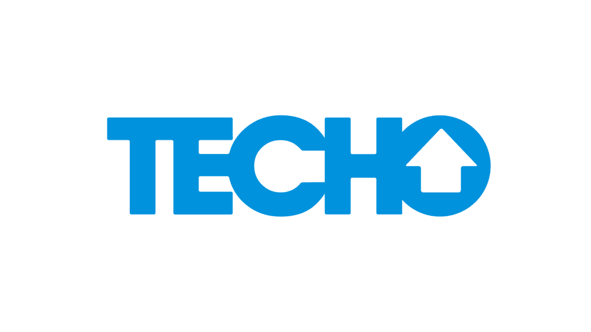
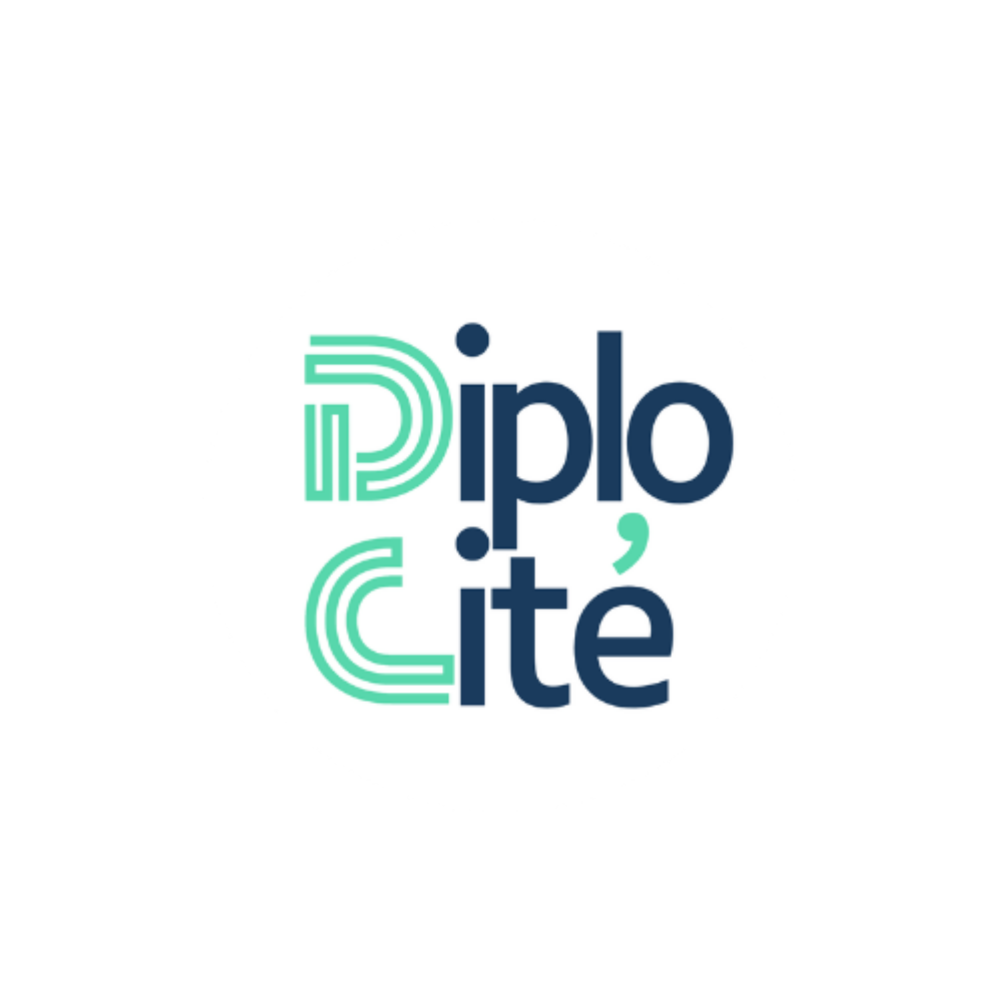
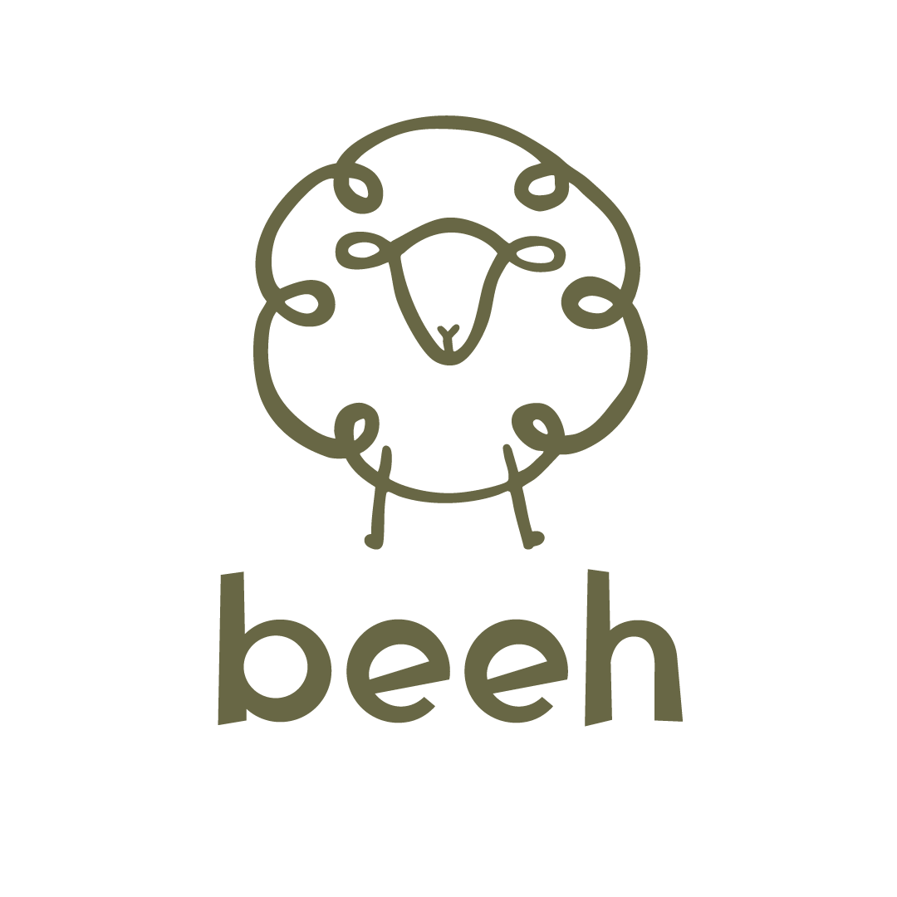

Define
Need to bring your communications into focus?
Research, strategy and organisational communications.
I’m Giuliana, a consultant with seven years’ experience advising international organisations, NGOs and companies that want to connect with their audiences, strengthen their positioning and create lasting results.
Explore my workNeed to bring your communications into focus?
Research, strategy and organisational communications.
Looking to build or strengthen your brand?
Branding, positioning, identity and storytelling.
Want to reach your audiences more effectively?
Content, social media, platforms and digital marketing.
Have a campaign, event or project to bring to life?
Campaigns, events, influencer work and editorial projects.
We define what to communicate, to whom, with what positioning and towards which goals.
We turn that strategy into brands, content, campaigns, platforms and experiences.
We assess results, learn from the data and refine the strategy to keep moving forward.
I’ve worked with SMEs, international organisations, NGOs and multinational companies on communications projects in Uruguay, France and other international contexts.



